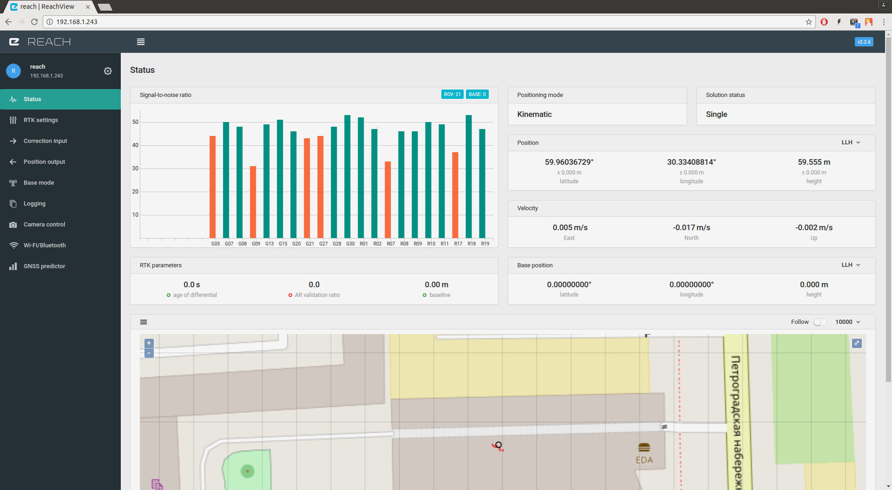

Introduction
A propos¶
ReachView est une application web qui vous permet de prendre le contrôle du module Reach RTK et du Reach RS. C'est l'application la plus simple pour l'utilisateur jamais créée pour un système RTK et, parmi d'autres fonctionnalités, elle permet une mise à jour sans fil afin de constamment travailler avec une version à jour de l'application. Celle-ci fonctionne sur n'importe quel appareil équipé d'un navigateur internet et ne nécessite pas de connexion internet. ReachView est hebergé sur le module Reach lui-même et est accessible par la connexion Wi-Fi, ce qui le rend compatible avec Windows, OSX, Linux, Android et iOS.
Résolution de l'IP¶
L'application ReachView est accessible par un navigateur. Pour accéder à l'application il est nécessaire d'établir l'adresse IP du module Reach sur le réseau. Selon le système d'exploitation différentes solutions existent. De la même façon que sur le Web, une adresse IP locale peut être associée à un nom, cependant tout système d'exploitation ne le permet pas.
Quand le module Reach est connecté à un routeur ou point d'accès Wi-Fi¶
Votre appareil doit être connecté au même réseau Wi-Fi que le module Reach. Le module Reach sera visible en tant qu'appareil "Murata Manufacturing".

Windows¶
Accéder à ReachView en tapant “http://reach.local” dans votre navigateur. Si vous avez changé le nom de l'appareil, veuillez taper “http://nom_appareil.local”. Si le nom ne peut être résolu:
- Installer Apple Bonjour (probablement déjà installé sur votre système si vous avez iTunes ou Skype).
- Trouver l'adresse IP avec "Zenmap".
OSX/Linux¶
Accéder à ReachView en tapant “http://reach.local” dans votre navigateur. Si vous avez changé le nom de l'appareil, veuillez taper “http://nom_appareil.local”. Si le nom ne peut être résolu:
- Trouver l'adresse IP avec “nmap”.
iOS¶
Accéder à ReachView en tapant “http://reach.local” dans votre navigateur. Si vous avez changé le nom de l'appareil, veuillez taper “http://nom_appareil.local”. Si le nom ne peut être résolu:
- Trouver l'adresse IP avec l'application “Fing”.
Android¶
Android ne permet pas la résolution du nom sur un réseau local. Il est nécessaire de trouver l'adresse IP:
- Trouver l'adresse IP avec l'application “Fing”.
- Utiliser l'application "Network Tools", celle-ci permet également de trouver l'adresse IP du module Reach quand il est connecté au hotspot de votre smartphone.
Quand le module Reach est connecté au hotpost Reach¶
Par défaut le module Reach crée un hotspot Wi-Fi et vous pouvez vous y connecter au même titre que n'importe quel autre réseau Wi-Fi. Prenez garde car parfois votre téléphone essaiera de basculer automatiquement vers la connexion 3G/4G puisque le hotspot Wi-Fi créé par le module Reach ne fournit pas d'accès à internet.
- Quand il est vous est demandé si vous souhaitez rester connecté au réseau sans connexion Internet, répondez "Oui".
- Si votre smartphone est toujours sur la connexion 3G/4G et qu'un point d'interrogation "?" apparait près de l'icône Wi-Fi, il est préférable de désactiver temporairement les données mobiles. Cela forcera le smartphone à se connecter au réseau Wi-Fi.
Accéder à ReachView en tapant “http://reach.local” ou 192.168.42.1 dans votre navigateur depuis n'importe quel système d'exploitation.
Première installation¶
Se connecter au module Reach¶
Quand le module Reach est mis sous tension pour la première fois, il créera un hotspot Wi-Fi.
- Ouvrir la liste des réseaux Wi-Fi sur votre smartphone, tablette ou ordinateur.
- Se connecter au réseau dont le nom est reach:xx:xx (ex. reach:66:ac).
- Taper le mot de passe réseau : emlidreach.
Paramétrer le Wi-Fi.¶
Après s'être connecté au réseau Wi-Fi créé par le module Reach, ouvrez le navigateur internet de votre smartphone, tablette ou ordinateur.
Taper http://192.168.42.1 dans la barre d'adresse et vous verrez ReachView Updater.
Cliquez sur le bouton plus et entrez le nom de votre réseau Wi-Fi, type de sécurité et mot de passe. Cliquez sur le bouton Save (enregistrer). Votre module Reach peut alors rejoindre votre réseau Wi-Fi.
Cliquez sur le réseau ajouté puis sur le bouton Connect.
Le module Reach essaiera alors de se connecter à votre réseau Wi-Fi. Vous devrez alors également connecter votre appareil à ce même réseau.
Si le module Reach n'a pas réussi à se connecter au réseau Wi-Fi il passera automatiquement en mode hotspot. Dans ce cas, recommencer la procédure depuis le début de ce chapitre. Vérifier que votre nom de réseau et mot de passe sont corrects.
Mises à jour¶
Si la connexion au Wi-Fi est réussi, vous pouvez maintenant trouver le module Reach sur votre réseau et ouvrir ReachView. Pendant la première installation, vous verrez l'utilitaire de mise à jour ReachView Updater. C'est une application distincte qui effectue des auto-tests, synchronisation d'horloge et met à jour l'application principale ReachView.
L'utilitaire de mise à jour ReachView Updater vérifiera si des mises à jours sont disponibles et les installera.
Cliquez sur "Reboot" pour redémarrer, puis sur le bouton d'accès à l'application "go to the app!". Patientez pendant que le module redémarre.
Une minute plus tard, rafraîchissez la page de l'application ReachView.
